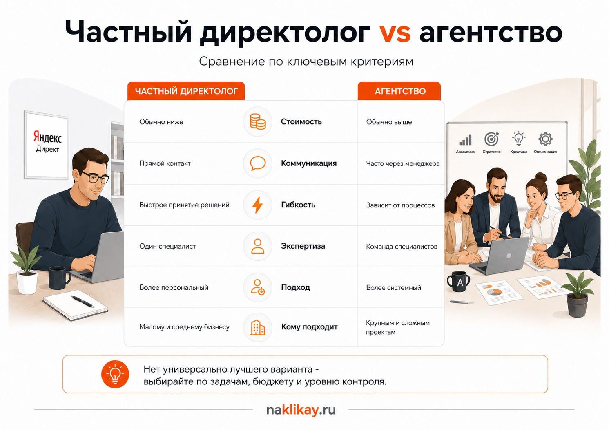

Блог о платном трафике
Директолог или агентство: кого выбрать для Яндекс Директа
Если вам нужно настроить или вести Яндекс Директ, выбор обычно сводится к двум вариантам: частный директолог или рекламное агентство.
Универсально лучшего варианта нет. Для проекта, где нужен один сильный специалист, прямое общение и быстрые решения, частный директолог часто оказывается удобнее. Агентство имеет смысл, когда одновременно требуются разные специалисты, много рекламных направлений и выстроенный командный процесс.
При этом само слово «агентство» или «частный специалист» почти ничего не говорит о качестве работы. Сильный директолог может вести крупный рекламный проект лучше целой команды, а известное агентство может передать клиента начинающему специалисту. Поэтому сравнивать нужно не вывеску, а то, кто конкретно будет работать с рекламой и как будет устроена работа.

Чем частный директолог отличается от агентства
Главное различие - организация работы.
Частный директолог обычно сам общается с клиентом, настраивает рекламу, анализирует статистику, предлагает изменения и отвечает за результат своей работы.
В агентстве задачи могут быть распределены между несколькими людьми. Например, клиент общается с аккаунт-менеджером, рекламу ведет директолог, аналитику настраивает другой специалист, а креативами занимается дизайнер.
Наличие команды полезно, если проект действительно требует нескольких компетенций. Но для обычного ведения Яндекс Директа большое количество участников само по себе преимуществом не является.
Подробнее - в статье «Как выбрать директолога».
Директолог или агентство: сравнение
| Критерий | Частный директолог | Агентство |
|---|---|---|
| Общение | Обычно напрямую со специалистом | Может идти через аккаунт-менеджера |
| Скорость решений | Как правило, меньше согласований | Зависит от внутренних процессов |
| Количество специалистов | Один основной исполнитель | Можно подключать команду |
| Стоимость работы | Часто ниже из-за меньших накладных расходов | Может быть выше из-за структуры агентства |
| Погружение в проект | Зависит от загрузки конкретного специалиста | Зависит от количества проектов у команды |
| Аналитика и дополнительные работы | Зависит от компетенций специалиста | Можно распределить между разными сотрудниками |
| Ответственность | Понятно, кто конкретно ведет проект | Может быть распределена между отделами |
| Замена исполнителя | Если специалист недоступен, заменить его некем | Агентство может передать проект другому сотруднику |
Самая существенная разница для клиента обычно проявляется в коммуникации и ответственности. У частного специалиста проще понять, кто принимает решения. В агентстве нужно заранее выяснить, кто именно будет заниматься рекламой после подписания договора.

Плюсы работы с частным директологом
Прямое общение
Вы разговариваете с человеком, который непосредственно работает в рекламном кабинете.
Если нужно обсудить новую услугу, изменить бюджет, проверить гипотезу или разобраться с просадкой заявок, информация не проходит через цепочку менеджеров.
На практике это сокращает количество искажений и ускоряет принятие решений.
Один человек отвечает за рекламу
Когда проект ведет конкретный специалист, проще определить зону ответственности.
Не возникает ситуации, когда аккаунт-менеджер ждет ответа от директолога, директолог ждет данные от аналитика, а клиент пытается выяснить, на каком этапе находится задача.
Для небольшого и среднего проекта такая схема обычно удобна.
Более гибкий формат работы
Частному специалисту проще изменить план работы под конкретный бизнес.
Например, сегодня нужно больше внимания уделить рекламным кампаниям, через неделю проверить посадочную страницу, а затем настроить передачу дополнительных целей в аналитику.
В агентстве подобные изменения иногда требуют дополнительных согласований или выходят за рамки стандартного тарифа.
Меньше административных расходов
У частного директолога нет аккаунт-отдела, офиса и большой управленческой структуры, которые тоже нужно оплачивать.
Это не означает, что хороший специалист обязательно должен стоить дешево. Опытный директолог может брать за работу сопоставимую с агентством сумму. Сравнивать правильнее не цену сама по себе, а объем работ и ожидаемую ценность для проекта.
Минусы частного директолога
Основной риск очевиден - большая часть работы завязана на одном человеке.
Если специалист заболел или временно недоступен, отдельного сотрудника, который сразу его заменит, может не быть.
Второй момент - ограниченность компетенций. Директолог может хорошо разбираться в контекстной рекламе и аналитике, но не обязан одновременно быть сильным дизайнером, программистом, SEO-специалистом и CRM-интегратором.
Поэтому перед началом работы нужно определить, какие задачи действительно должен решать подрядчик.
Если вам требуется именно Яндекс Директ, аналитика рекламного трафика и работа с посадочной страницей, один опытный специалист вполне может закрывать эту задачу. Если нужен полноценный отдел маркетинга, возможностей одного человека может быть недостаточно.
Плюсы рекламного агентства
Можно подключить несколько специалистов
Это главное реальное преимущество агентской модели.
Для сложного проекта могут понадобиться директолог, аналитик, дизайнер, разработчик, маркетолог и специалист по CRM. Агентство может собрать их внутри одной команды.
Такой формат особенно полезен, когда проблема выходит за пределы рекламного кабинета.
Например, трафик идет нормально, но заявки теряются на сайте, некорректно передаются в CRM или отдел продаж плохо их обрабатывает. Здесь одной оптимизации Яндекс Директа может быть мало.
Проще заменить исполнителя
Если сотрудник агентства уходит в отпуск, увольняется или перегружен, компания теоретически может передать проект другому специалисту.
Для бизнеса, где реклама является критически важным каналом продаж, наличие такой подстраховки может быть существенным фактором.
Формализованные процессы
У агентств чаще существуют регламенты, отчеты, планирование задач, роли сотрудников и внутренний контроль.
Для крупной компании такая структура может быть удобнее работы с одним человеком.
Но наличие регламента еще не означает хорошего результата. Иногда процесс становится слишком тяжелым: простое изменение приходится согласовывать через несколько человек.
Минусы агентства
Вы можете общаться не с тем человеком, который ведет рекламу
Это одна из главных вещей, которую я бы проверял до заключения договора.
На продаже с вами может разговаривать руководитель или опытный специалист. После оплаты проект передают аккаунт-менеджеру и другому директологу.
Поэтому заранее спросите:
- кто конкретно будет вести Яндекс Директ;
- какой у него опыт;
- сколько проектов он ведет одновременно;
- сможете ли вы общаться с ним напрямую;
- кто анализирует результаты;
- кто принимает решения по изменениям в кампаниях.
Название агентства в этом вопросе вторично. Рекламой все равно занимается конкретный человек.
Дополнительное звено в коммуникации
Схема «клиент - менеджер - директолог» удобна агентству, но не всегда удобна клиенту.
Менеджер должен правильно понять вопрос, передать его специалисту, получить ответ и вернуть его обратно.
Для стандартной отчетности это нормально. Когда нужно быстро обсудить причину изменения показателей или сложную рекламную гипотезу, прямой разговор со специалистом обычно эффективнее.
Часть команды может фактически не работать над проектом
Формулировка «над проектом работает команда» выглядит убедительно, но нужно выяснить, что она означает на практике.
Если аналитик подключается раз в несколько месяцев, дизайнер сделал два баннера на старте, а ежедневно рекламой занимается один директолог, фактически вы все равно покупаете работу одного специалиста плюс инфраструктуру агентства.
Поэтому смотрите на реальные задачи каждого участника.
Что выгоднее по стоимости
Сравнивать только ежемесячную стоимость услуг неправильно.
Допустим, один подрядчик стоит дешевле, но плохо анализирует рекламные кампании. Другой берет больше, зато быстрее обнаруживает неэффективные расходы и приводит больше целевых обращений.
Для бизнеса второй вариант может оказаться значительно выгоднее.
Я бы сравнивал:
- что конкретно входит в работу;
- кто занимается проектом;
- как часто анализируется реклама;
- работает ли подрядчик с аналитикой;
- проверяет ли качество заявок;
- предлагает ли гипотезы;
- занимается ли посадочной страницей и воронкой, когда проблема находится там;
- насколько прозрачно расходуется рекламный бюджет.
Цена подрядчика имеет значение, но экономить несколько тысяч рублей на специалисте при существенно большем рекламном бюджете обычно плохая логика.
Подробнее - в материале о стоимости услуг директолога.
Кому лучше выбрать частного директолога
Я бы рассматривал частного специалиста, если:
- основной канал продвижения - Яндекс Директ;
- вам нужен прямой контакт с исполнителем;
- проект может вести один специалист;
- важно быстро вносить изменения;
- не нужен отдельный аккаунт-менеджер;
- вы хотите понимать, кто лично отвечает за рекламу.
Размер рекламного бюджета сам по себе не определяет выбор. Опытный специалист способен работать и с крупными бюджетами. Гораздо важнее объем задач и количество компетенций, которые одновременно требуются проекту.
Когда лучше выбрать агентство
Агентский формат логичнее, если проект объективно требует команды.
Например:
- одновременно используется много рекламных каналов;
- регулярно нужен большой объем дизайна;
- требуется постоянная работа программиста;
- нужно связать рекламу, CRM, сквозную аналитику и другие системы;
- внутри проекта много продуктов, подразделений и ответственных лиц;
- компании удобнее работать с подрядчиком, где роли формально распределены между несколькими сотрудниками.
Если вся задача сводится к Яндекс Директу, аргумент «у нас над проектом работает команда» уже не настолько значим. Нужно смотреть, какую работу эта команда действительно выполняет.
Как проверить директолога или агентство перед началом работы
Я бы не выбирал подрядчика по презентации или обещаниям получить определенное количество заявок.
Сначала посмотрите реальные проекты.
Кейсы особенно полезны, если видно:
- какая была задача;
- какой рекламный бюджет использовался;
- что именно делал специалист;
- какие проблемы возникали;
- какие показатели удалось получить;
- есть ли реальные скриншоты статистики.
Кейсы и информацию об услугах можно посмотреть на главной странице.
После этого задайте несколько конкретных вопросов.
Кто будет лично вести рекламу?
Для агентства этот вопрос обязателен.
Если продает один человек, а работать будет другой, попросите познакомить вас непосредственно с исполнителем.
Как будет оцениваться результат?
Количество кликов и CTR сами по себе не являются целью бизнеса.
Заранее определите, какие показатели нужны именно вам: заявки, квалифицированные обращения, продажи, стоимость привлечения клиента или другие бизнес-метрики.
Как будет устроена отчетность?
Вы должны видеть, куда расходуется рекламный бюджет и какой результат он приносит.
Хороший отчет позволяет быстро ответить хотя бы на три вопроса:
- Сколько потрачено?
- Что получили за эти деньги?
- Что подрядчик собирается менять дальше?
У кого будут рекламные кабинеты и доступы?
Клиент должен сохранять доступ к собственной рекламе, статистике и связанным системам.
Смена подрядчика не должна означать потерю накопленной истории кампаний.
Что выбираю я
Я сам работаю как частный специалист и веду проекты лично.
Для клиента это означает прямую коммуникацию: человек, с которым обсуждается реклама, сам работает с кампаниями и аналитикой. Я не передаю проект помощнику после заключения договора.
При этом я не считаю, что частный директолог всегда лучше агентства. Если проекту действительно постоянно требуется команда из нескольких специалистов, агентский формат может быть удобнее.
Главный критерий другой: подрядчик должен понимать экономику рекламы, прозрачно показывать результаты и иметь достаточно времени и компетенций для конкретного проекта.
Подробнее обо мне и услугах - на главной странице.
Директолог или агентство: что в итоге выбрать
Если вам нужен Яндекс Директ и большую часть задачи способен закрыть один опытный специалист, я бы в первую очередь рассматривал частного директолога. Вы получаете прямой контакт, понятную ответственность и меньше промежуточных звеньев.
Если проект включает много направлений и постоянно требует работы нескольких специалистов, рациональнее рассмотреть агентство.
В обоих случаях проверяйте не название формата, а конкретных людей, которые будут заниматься рекламой. Именно их опыт, загрузка, подход к аналитике и качество работы в итоге определят результат.